简单线性回归 - 快速入门
作者：Ruben Geert van den Berg，发表于 回归分析 & 统计学A-Z
简单线性回归是一种通过线性关系，利用一个度量变量预测另一个度量变量的技术。“度量变量 (metric variables)” 指的是以区间或比例尺度测量的变量。 关键在于，像加法和减法这样的计算对于度量变量（如“薪水 (salary)”或“长度 (length)”）是有意义的，但对于分类变量（如“国籍 (nationality)”或“颜色 (color)”）则没有意义。
示例：根据智商 (IQ) 预测工作表现
假设一家公司想知道是否可以通过智商 (IQ) 分数来预测工作表现。他们应该采取的第一步是尽可能多地测量员工的工作表现和智商。 他们对 10 名员工进行了测量，结果如下所示。
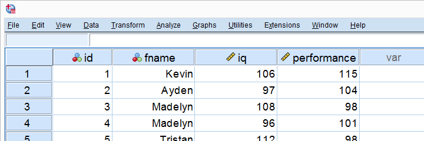
查看这些数据，似乎智商 (IQ) 分数较高的员工往往也有较好的工作表现分数。然而，即使只有 10 个案例，也很难看出这一点，更不用说更多案例了。 解决方案是创建一个散点图 (scatterplot)，如下所示。
散点图：工作表现与智商 (IQ)
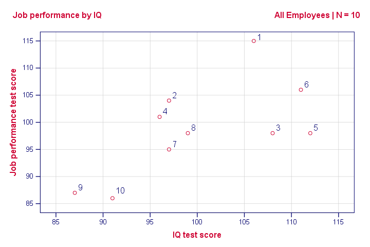
请注意，我们数据中的 “id” 值显示了哪个点代表哪个员工。 例如，最高的点（最佳表现）是 1 - Kevin，他的表现分数为 115。
总之，如果我们从左向右移动（从较低的智商 (IQ) 到较高的智商 (IQ)），我们的点往往会更高（更好的表现）。 也就是说，我们的散点图显示了智商 (IQ) 和工作表现之间的正 相关性 (correlation)。
皮尔逊相关性 (Pearson Correlation)：工作表现与智商 (IQ)
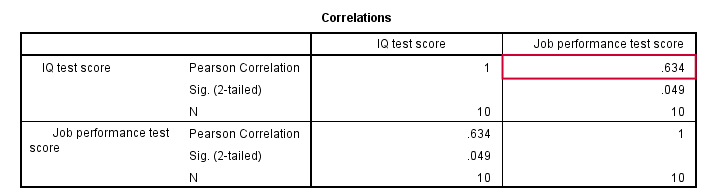
如上图所示，相关性为 0.63。 尽管我们的样本量很小，但它甚至具有统计显著性 (statistically significant)，因为 p < 0.05。 智商 (IQ) 和工作表现之间存在很强的线性关系。 但是，我们尚未回答的问题是：我们如何才能通过智商 (IQ) 来预测工作表现？ 我们将假设它们之间的关系是线性的。 现在，确切的关系只需要两个数字——一个截距 (intercept) 和一个斜率 (slope)，回归分析将为我们计算它们。
线性关系 - 通用公式
任何线性关系都可以定义为 Y’ = A + B * X。 让我们看看这些数字的含义。
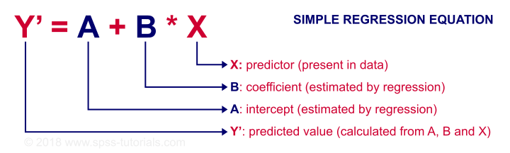
由于 X 在我们的数据中——在本例中，是我们的智商 (IQ) 分数——如果我们知道截距（或常数）和 B 系数 (B coefficient)，我们就可以预测工作表现。 让我们首先让 SPSS 计算这些，然后更深入地了解它们的含义。
工作表现的预测公式
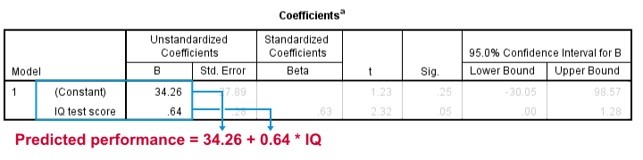
此输出告诉我们，在给定智商 (IQ) 的情况下，工作表现的最佳可能预测是：预测工作表现 = 34.26 + 0.64 * 智商 (IQ)。 因此，如果我们得到一个智商 (IQ) 分数为 100 的申请人，我们对他工作表现的最佳可能估计是：预测工作表现 = 34.26 + 0.64 * 100 = 98.26。
因此，我们回归分析的核心输出是 2 个数字：
- 一个 截距 (intercept) （常数）为 34.26
- 一个 b 系数 (b coefficient) 为 0.64。
那么，这些数字从何而来，又意味着什么呢？
B 系数 (B Coefficient) - 回归斜率 (Regression Slope)
b 系数 (B coefficient) 是 X 每增加一个单位，Y 增加的单位数。 我们的 b 系数 (B coefficient) 为 0.64 意味着智商 (IQ) 每增加一个单位，工作表现增加 0.64 个单位。 我们通过将回归线添加到我们的散点图中来可视化这一点，如下所示。
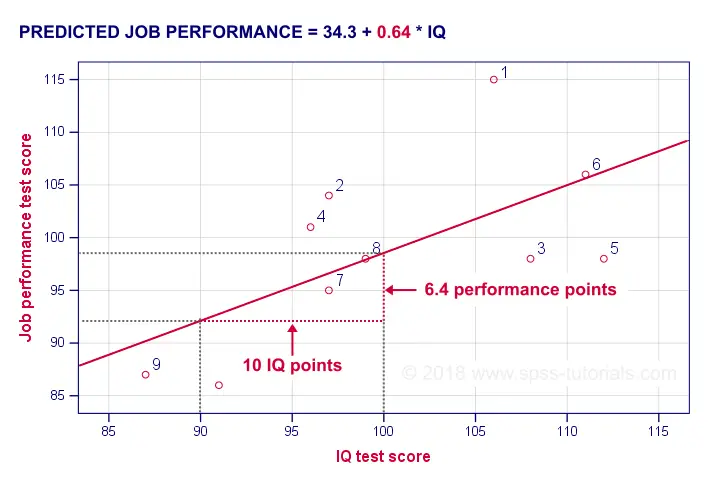
平均而言，智商 (IQ) = 100 的员工比智商 (IQ) = 90 的员工的工作表现高 6.4 分。 我们的 b 系数 (B coefficient) 越高，我们的回归线就越陡峭。 这就是为什么 b 有时被称为回归斜率 (regression slope)。
回归截距 (Regression Intercept)（“常数 (Constant)”）
截距 (intercept) 是预测变量得分为 0 的情况下的预测结果。 如果有人智商 (IQ) = 0，我们将预测此人的工作表现为 (34.26 + 0.64 * 0 =) 34.26。 从技术上讲，截距 (intercept) 是回归线与 y 轴交叉（“截取 (intercepts)”）的 y 分数，如下所示。
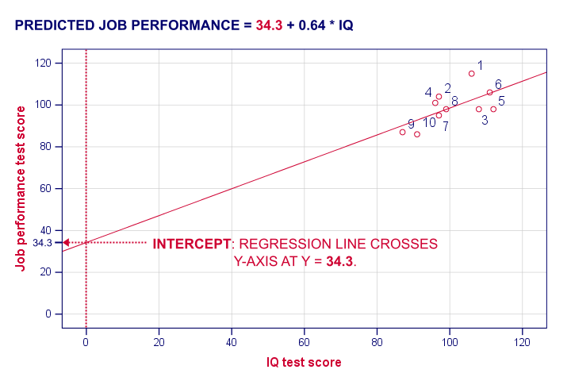
我希望这能阐明截距 (intercept) 和 b 系数 (B coefficient) 的真正含义。 但是，为什么 SPSS 会得出 a = 34.3 和 b = 0.64，而不是其他数字呢？ 一种解释方法是从回归残差 (regression residuals) 开始。
回归残差 (Regression Residuals)
回归残差 (regression residual) 是对于某个案例，结果变量上的观测值与预测值之差。 下图可视化了我们示例的回归残差 (regression residuals)。
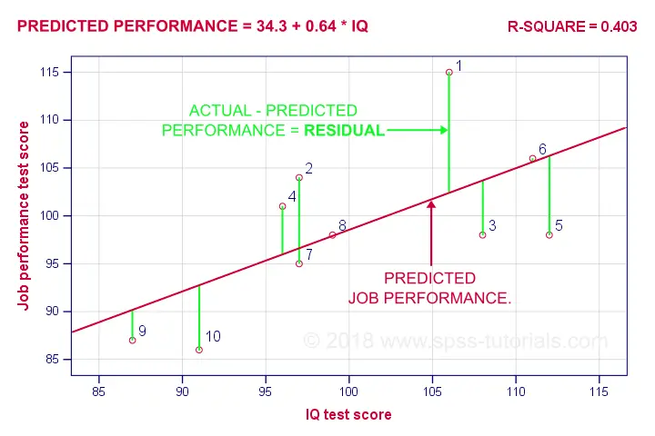
对于大多数员工来说，他们的观察到的工作表现与我们的回归分析预测的不同。 这种差异（残差 (residual)）越大，我们的模型对该员工的工作表现预测就越差。 那么，我们的模型对_所有案例_的工作表现预测有多好？
让我们首先计算我们 10 个案例的预测值和残差 (residuals)。 下面的屏幕截图将它们显示为我们数据中的 2 个新变量。 请注意，工作表现 = 预测值 + 残差 (resid)。
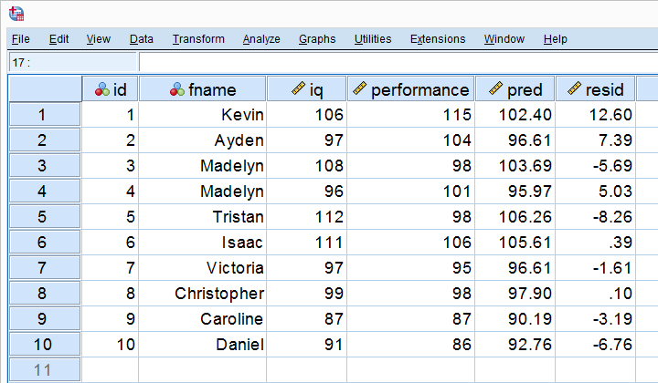
我们的残差 (residuals) 表明我们的回归方程对每个案例的偏差程度。 那么，我们的回归方程对_所有案例_的偏差程度是多少？ 平均残差 (residual) 似乎可以回答这个问题。 但是，它始终为零：正残差 (positive residuals) 和负残差 (negative residuals) 只是加起来为零。 因此，我们计算均方残差 (mean squared residual)，它恰好是残差 (residuals) 的方差。
误差方差 (Error Variance)
误差方差 (error variance) 是均方残差 (mean squared residual)，表示我们的回归模型预测某个结果变量的糟糕程度。 也就是说，误差方差 (error variance) 是回归分析无法“解释”的结果变量中的方差。 那么，误差方差 (error variance) 是否是一个有用的度量标准？ 几乎是。 一个问题是误差方差 (error variance) 不是一个标准化的度量标准：具有较大方差的结果变量通常也会导致较大的误差方差 (error variance)。 通过将误差方差 (error variance) 除以结果变量的方差可以解决此问题。 从 1 中减去此值将得到 R 方 (r-square)。
R 方 (R-Square) - 预测准确性 (Predictive Accuracy)
R 方 (r-square) 是结果变量中由回归分析解释的方差比例。 一种计算方法是从结果变量的方差和误差方差 (error variance) 计算，如下所示。
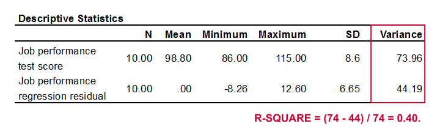
工作表现的方差为 73.96，我们的误差方差 (error variance) 仅为 44.19。 这意味着我们的回归方程解释了大约 40% 的工作表现方差。 这个数字被称为 R 方 (r-square)。 因此，R 方 (r-square) 指示了我们回归模型的准确性。
计算 R 方 (r-square) 的第二种方法是简单地将预测变量和结果变量之间的相关性 (correlation)平方。 在我们的案例中，0.634 2 = 0.40。 它被称为 R 方 (r-square)，因为“r”在统计学中表示样本相关性。
那么，为什么我们的回归分析得出 34.26 和 0.64，而不是其他数字呢？ 好吧，那是因为回归分析计算出的系数可以最大化 R 方 (r-square)。 对于我们的数据，任何其他截距 (intercept) 或 b 系数 (B coefficient) 都会导致低于我们的分析实现的 0.40 的 R 方 (r-square)。
推论统计 (Inferential Statistics)
到目前为止，我们的回归分析告诉我们 2 件重要的事情：
- 如何通过智商 (IQ) 预测工作表现：回归系数 (regression coefficients)；
- 智商 (IQ) 可以在多大程度上预测工作表现：R 方 (r-square)。
到目前为止，这两种结果仅适用于我们的 10 名员工。 如果这就是我们所追求的全部，那么我们就完成了。 但是，我们可能希望将我们的样本结果推广到（大得多的）总体。 这样做需要一些推论统计 (inferential statistics)，首先是调整后的 R 方 (r-square adjusted)。
调整后的 R 方 (R-Square Adjusted)
调整后的 R 方 (r-square adjusted) 是总体中 R 方 (r-square) 的无偏估计量。 回归分析计算出的系数可以最大化_我们数据的_ R 方 (r-square)。 将这些应用于其他数据（例如整个总体）可能会导致稍微降低的 R 方 (r-square)：调整后的 R 方 (r-square adjusted)。 这种现象被称为收缩 (shrinkage)。
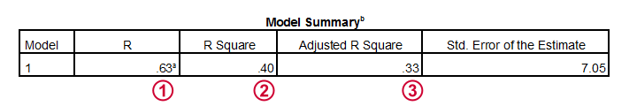
对于我们的数据，调整后的 R 方 (r-square adjusted) 为 0.33，远低于我们的 R 方 (r-square) 0.40。 也就是说，我们有很多收缩 (shrinkage)。 一般来说，
- 较小的样本量会导致更多的收缩 (shrinkage)；
- 在多元回归 (multiple regression)中包含更多的预测变量会导致更多的收缩 (shrinkage)。
标准误差 (Standard Errors) 和统计显著性 (Statistical Significance)
最后，让我们来看看我们输出的最后一点。
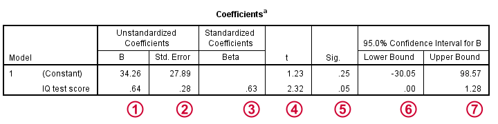
 截距 (intercept) 和 b 系数 (B coefficient) 定义了最佳预测结果变量与预测变量之间的线性关系。
截距 (intercept) 和 b 系数 (B coefficient) 定义了最佳预测结果变量与预测变量之间的线性关系。
 标准误差 (standard errors) 是我们的系数在（假设的）重复样本上的标准差。 较小的标准误差 (standard errors) 表示更准确的估计值。
标准误差 (standard errors) 是我们的系数在（假设的）重复样本上的标准差。 较小的标准误差 (standard errors) 表示更准确的估计值。
Beta 系数 (Beta coefficients) 是标准化的 b 系数 (B coefficients)：在标准化所有预测变量和结果变量后计算出的 b 系数 (B coefficients)。 它们主要用于比较多元回归 (multiple regression) 中不同的预测变量。 在简单回归中，beta = r，即样本相关性。
 t 是我们的检验统计量——不有趣但对于计算统计显著性 (statistical significance)是必要的。
t 是我们的检验统计量——不有趣但对于计算统计显著性 (statistical significance)是必要的。
“Sig.” 表示 b 系数 (B coefficient) 的双尾显著性 (2-tailed significance)，前提是原假设是总体 b 系数 (B coefficient) 为零。
 95%置信区间 (confidence interval) 给出了总体 b 系数 (B coefficient) 的可能范围。
95%置信区间 (confidence interval) 给出了总体 b 系数 (B coefficient) 的可能范围。